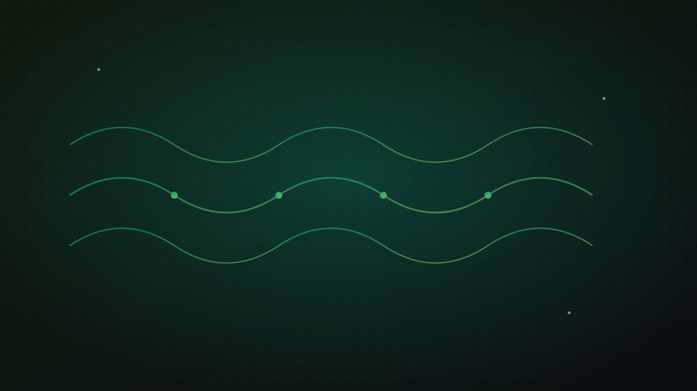
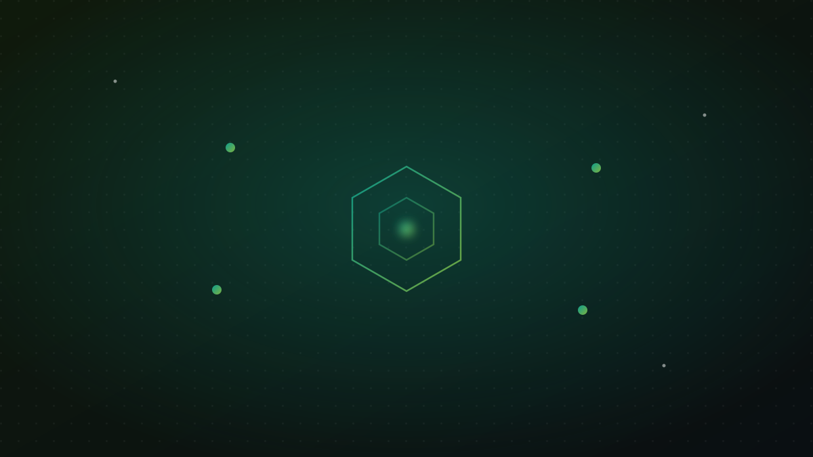
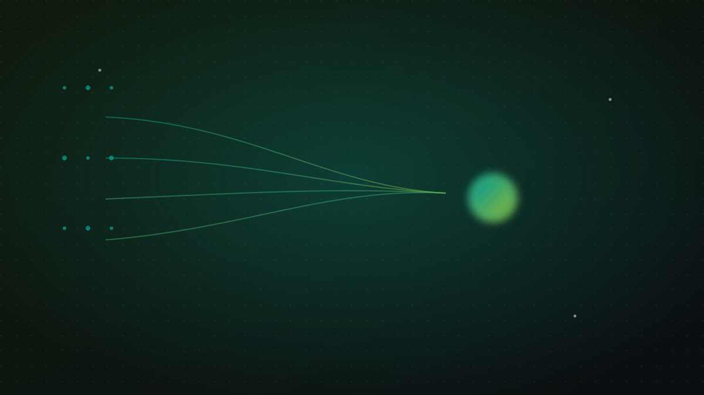
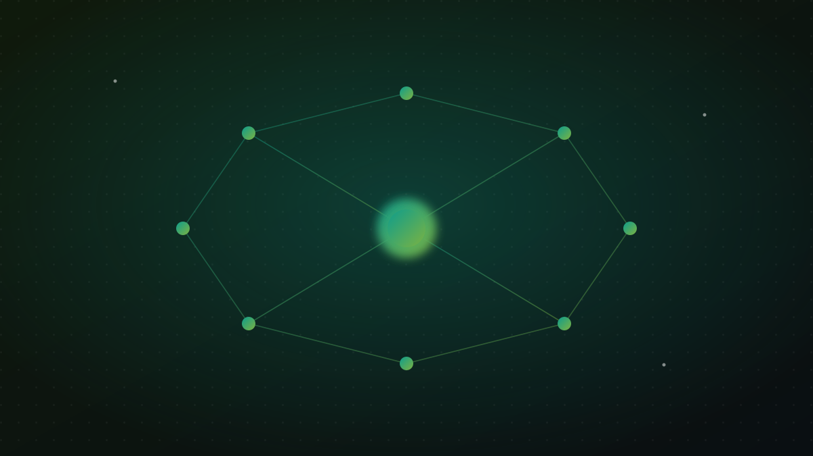

Attention (Dikkat) Mekanizması Sezgisel Anlatım: Query, Key, Value ve Self-Attention Neden Devrim Yarattı?
Bir model bir kelimeyi anlarken hangi kelimelere "bakar"? Query-Key-Value, self-attention ve Transformer devrimini günlük analojilerle sezgisel anlatım.
Oku
Tokenizasyon ve Türkçe'nin Zorlukları: Eklemeli Dil, Kelime Patlaması ve Verimli Tokenizasyon
Türkçe neden daha fazla token tüketir? Eklemeli dil, kelime patlaması, BPE ve SentencePiece ile verimli tokenizasyonun maliyet ve hıza etkisi.
Oku
Embedding Modelleri ve Semantik Benzerlik: Metni Anlama Çeviren Vektörler
Metinleri vektöre çevirme, kosinüs benzerliği, embedding modeli seçimi ve çok dilli embedding'leri sezgisel analojiler ve kısa bir kod örneğiyle anlatıyoruz.
Oku
RAG İçin Chunking Stratejileri: Parçalama Kaliteyi Nasıl Belirler?
RAG'de chunking stratejileri: sabit boyut, cümle/paragraf, overlap, anlamsal chunking ve başlık-bağlamı koruma. Parçalama kaliteyi nasıl etkiler, sezgisel anlatım.
Oku
Reranking ve Hibrit Arama: BM25 ile Semantik Aramayı Birleştirmek
BM25 ile semantik aramayı birleştiren hibrit arama, RRF ile skor füzyonu ve cross-encoder ile reranking'i kısa kod örnekleriyle sezgisel olarak anlatıyoruz.
Oku
Bağlam Penceresi ve Uzun Belgeler: Token Sınırı, Ortada Kaybolma, Uzun Bağlam vs RAG
Bağlam penceresi nedir? Token sınırı, "ortada kaybolma" sorunu, uzun bağlam mı RAG mi ve özetleme zincirleri (map-reduce, refine) sezgisel analojilerle anlatıldı.
Oku
LLM Ajanları ve Araç Kullanımı: Planlama, MCP ve Çok Adımlı Görevler
LLM ajanları nasıl araç çağırır, plan yapar ve çok adımlı görevleri yürütür? MCP'yi, fırsatları ve riskleri sade analojilerle anlatıyoruz.
Oku
Bilgi Grafiği + RAG (GraphRAG): İlişkileri Yakalayan Getirim
GraphRAG: bilgi grafiği ile RAG'i birleştiren getirim. Varlıklar arası bağlantılar, çok adımlı ve bütünsel sorular, klasik RAG'ın eksiklerini kapatma. Sezgisel anlatım.
Oku
Model Çıkarımı ve Ölçekleme: Gecikme, Verim, Niceleme ve KV-Cache ile GPU Maliyetini Düşürmek
Gecikme, verim, niceleme, KV-cache ve batching kavramlarını sezgisel analojilerle anlatan, GPU çıkarım maliyetini düşürmeye odaklı pratik bir rehber.
Oku
Veri Kalitesi ve Etiketleme: Modelin Asıl Yakıtı
Çöp girer çöp çıkar: veri temizleme, etiketleme stratejileri, sentetik veri ve dürüst değerlendirme setleriyle modelin asıl yakıtını anlatıyoruz.
OkuHalide Yılmaz kimdir?
ODTÜ Bilgisayar Mühendisi bir kurucunun kısa hikâyesi.
OkuEcoFluxion nasıl ortaya çıktı?
EcoFluxion basit bir soruyla nasıl başladı ve neden kendi ürünlerini geliştiriyor.
Oku
İçtiHub nedir?
Hukuk profesyonelleri için yapay zeka destekli platform: içtihat arama, belge analizi.
Oku